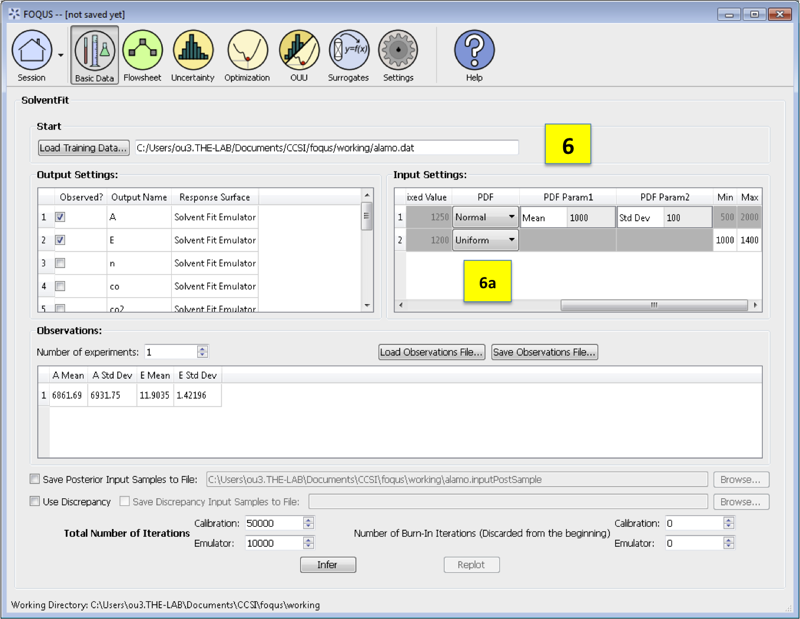
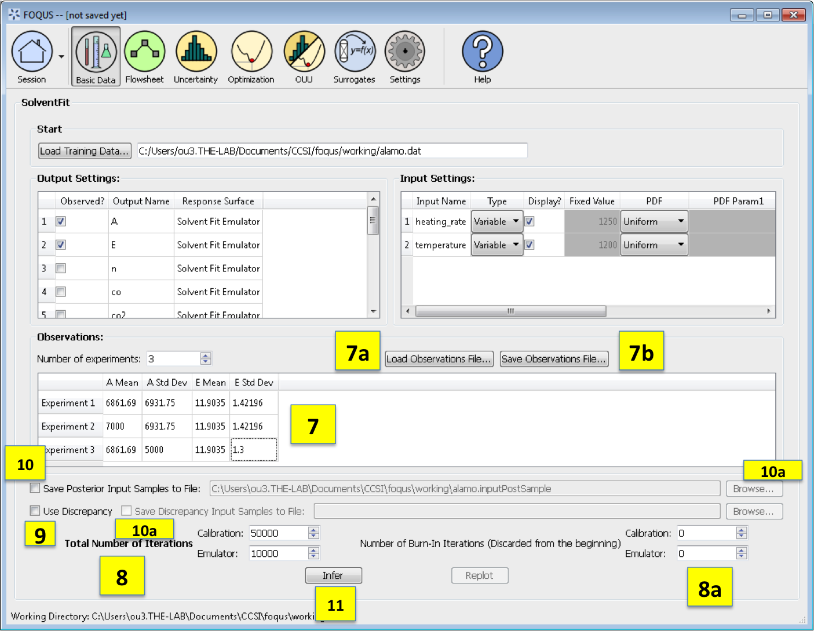

[sec:solvent_fit]
The SolventFit module is an uncertainty quantification tool for full Bayesian calibration of an Aspen Plus solvent process model to experimental data. SolventFit may provide improved predictions with uncertainty bounds by accounting for uncertainty in model parameters and deficiencies in the model form. The result is a posterior distribution of parameters allowing for predictions with uncertainty. uses a custom BSS-ANOVA-based response surface for the outputs. Like the Bayesian inference module, the *SolventFit* algorithm :raw-latex:`\citep{Bhat_2015}` utilizes Markov Chain Monte Carlo (MCMC) to compute the posterior distributions, and uses a custom BSS-ANOVA-based response surface (emulators) that serves as a fast approximations to the actual simulation model.
SolventFit Instructions¶
To use *SolventFit*, the user will need to install R, as well as the R packages “MCMCpack”, “abind” and “MASS”. Please refer to the installation instructions in Section [(sec.surrogate.acosso)]. Once R is installed, the user will also need to set the path to the RScript executable within FOQUS.
{kind=link}
SolventFit Home Screen
Basic Data. From the FOQUS main screen, click the Basic Data button and select SolventFit to enter a SolventFit session.
Load Training Data loads the file of design and variable inputs and their relevant simulation outputs (from Aspen or other computer simulation code). This file usually has extension .txt, .dat, or .csv.
Output Settings lists the available outputs for analysis. The Output Name column lists the name of each output. The user can select/deselect outputs for analysis using the checkboxes in the Observed column. The response surface in SolventFit will be prepopulated with “SolventFit Emulator” because SolventFit uses its own custom BSS-ANOVA response surface model. The simulation ensemble is used as the training data for generating the response surfaces.

SolventFit Input Settings
Input Settings is populated with input variable information from the training data. Under the column, Type, the user can specify which inputs are fixed, design, or variable using the from the drop-down menu in the Input Settings Table. Selecting “Fixed” means that the input is fixed at its default value for all design points. Changing the type to “Variable” means that the input is a calibration parameter and is uncertain; therefore, its value varies between samples. Changing the type to “Design” means that the input is an experimental input with preselected values. In addition, the user can specify which inputs are displayed in the resulting plots of the posterior distributions. To omit specific inputs, clear the checkboxes from the *Display* column of the table. (The default is that once inference is completed, all inputs will be displayed in the plots.)
Fixed Value. With any fixed input, the only parameter that can be changed is the default value (i.e., all samples of this input are fixed at this default value).
SolventFit Prior PDF for Inputs
PDF. With any variable input, the minimum/maximum values, as well as the probability distribution function (PDF), for that input can be changed. The default prior is specified to be Uniform. To change the prior distribution type (e.g., Normal, Lognormal, or Gamma), use the drop-down list in the *PDF* column (box 6a) and enter corresponding values for the PDF parameters. To change the range of a uniform prior, scroll all the way to the right to modify *Min/Max*.
SolventFit Inference Screen
Observations section enables the user to add experimental data in the form of observations of certain output variables. At least one observation is required; the number of experiments may be changed using the pull down menu. For each observation, enter the mean and standard deviation (enter zero if there is no information about the noise) for all of the outputs. If any inputs are selected as design inputs, their values will also be required here. Currently, the observation noise model is assumed to be a normal distribution. Alternatively, the user can import the file of experiments using the Load Observation File button (7a). The user can also export the observations using the Save Observation File button (7b).
Number of Iterations are the number of iterations that the Markov Chain Monte Carlo (MCMC) is run for emulation and calibration. The default number of samples is set at 10000 for emulation and 50000 for calibration. Also the number of “burn-in” samples (number of initial samples to be thrown out) for both emulation and calibration may be changed from its default of 0 using the relevant button (8a).
Use Discrepancy. Check this box if the discrepancy should be estimated in the calibration model. It is usually good practice to include the discrepancy in the calibration analysis.
Save Posterior Input Samples to File checkbox, when selected, saves the posterior input samples as a PSUADE sample file (format described in Section [ap:psuadefiles]). This file characterizes the input uncertainty as a set of samples. In addition, the user can save the discrepancy samples to a file by selecting the checkbox Save Discrepancy Input Samples to File (10a). If saving posterior and/or discrepancy samples to a file, click Browse to set the name and location of where this file is saved (10b).
Click Infer to start the analysis. (Note: If the inference returns an invalid posterior distribution (i.e., one with no samples), it usually means the prior distributions or that the observation data are not prescribed appropriately. In this case, it is recommended that the user experiment with different priors and/or data distribution means and/or standard deviations.)
The plotted results for SolventFit are posterior distributions of the selected variable inputs; they are similar to the plots from the Bayesian Inference in the Uncertainty Quantification module in Figure [fig:uqt_infer_replot_results], see Section [sec:uq_tutorial] on Bayesian Inference for more details.
{kind=link}
{kind=link}